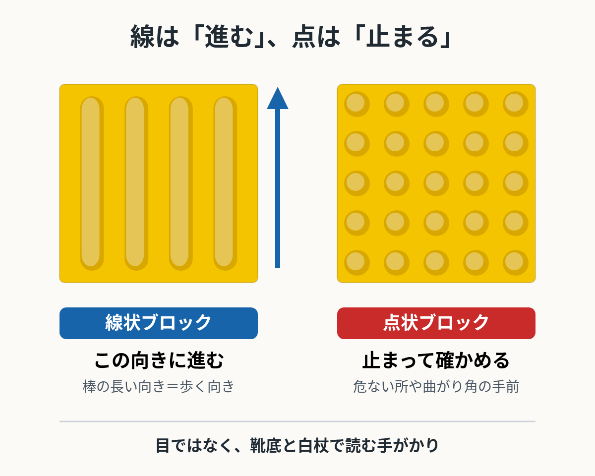
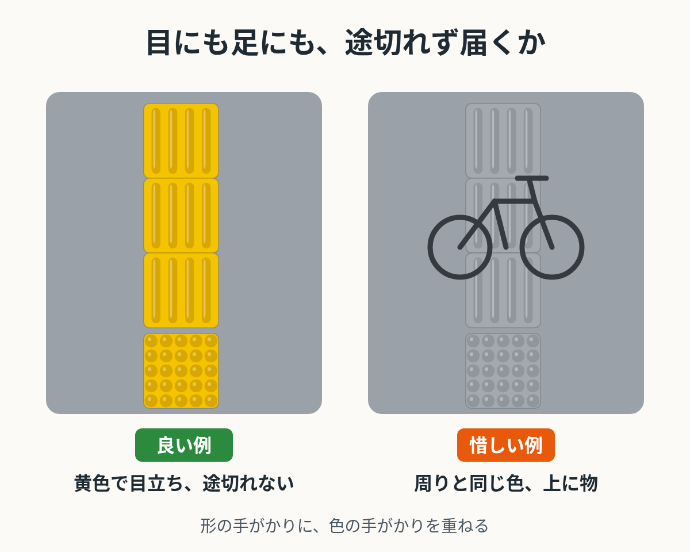

第4回 アクセシビリティ
点字ブロックの「線」と「点」（足裏で読む手がかり）


何がどう行為を誘っているか
点字ブロック（正式名称は視覚障害者誘導用ブロック）には2種類あります。細長い突起が並ぶ線状ブロックは「この向きに進む」、丸い突起が並ぶ点状ブロックは「ここで注意して確かめる」を示します。線状の突起の長い向きが、そのまま歩く向きです。1965年に岡山の三宅精一さんが考案し、1967年に岡山市の交差点付近で世界で初めて敷かれました。
平らで固い地面が体を支え、歩けること自体は、ギブソンのいうアフォーダンスです。突起は、その上で「どちらへ」「どこで止まるか」を知らせるシグニファイアで、目ではなく靴底や白杖で読み取られます。手がかりは見た目だけではない、と一目で伝わる好例です。
惜しい例・悪い例との対比
日本視覚障害者団体連合は、景観に合わせて歩道と同じような色や材質にしたブロックは、弱視の人には見分けにくいと指摘しています。突起という形の手がかりは残っていても、黄色という目の手がかりが消えてしまう例です。
また、ブロックの上に自転車などが置かれると、手がかりをたどった先に障害物が来てしまいます。同じ突起が、車いすやベビーカー、足腰の弱い人にはつまずきや妨げになりうることも挙げられています。ある人への手がかりが、別の人には妨げになりうる点も合わせて考えたいところです。
使いどころのひとこと
授業では「シグニファイアは視覚だけではない」例として、線と点の2種類だけで「進む」「止まる」を分けている点を紹介できます。スライドや図でも、意味の違う合図は形そのもので分け、色は補助として重ねると、見る人の条件が変わっても伝わります。
出典
- JIS T 9251:2014 高齢者・障害者配慮設計指針―視覚障害者誘導用ブロック等の突起の形状・寸法及びその配列（日本規格協会）
- 社会福祉法人 日本視覚障害者団体連合「点字ブロックについて」
- 岡山県 障害福祉課「点字ブロックは岡山で生まれました！」
- Gibson, J. J. (1979). The Ecological Approach to Visual Perception. Houghton Mifflin.
- Norman, D. A. (2013). The Design of Everyday Things (Revised and expanded edition). Basic Books.